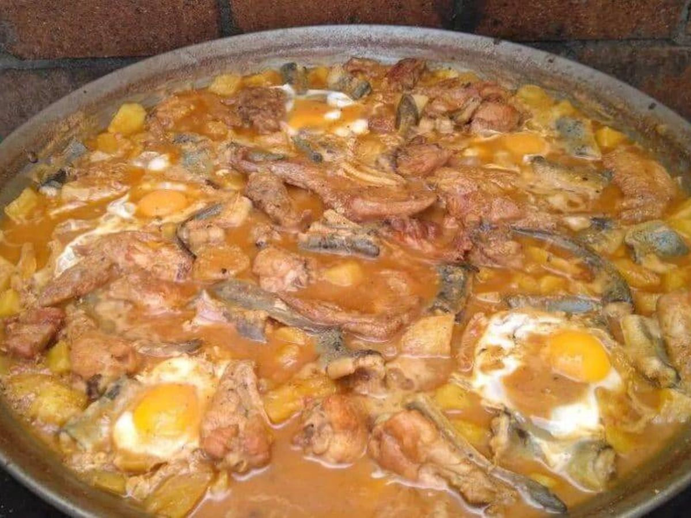
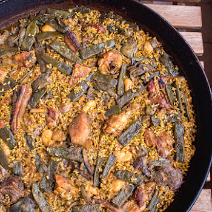

Receta paella valenciana
Ingredientes
- 1,5kg arroz bomba🍚
- 1 pollo de corral🐔
- 0.5 conejo🐇
- 500g Judía verde plana🥬
- 500g Garrofó
- 6g Alcachofa
- 500g Caracoles🐌
- Aceite de oliva virgen extra
- Pimentón dulce
- Tomate triturado🍅
- Azafrán
- Romero fresco
- Sal🧂
Como elaborarla
- Se sofríe en abundante aceite el pollo, el conejo, los caracoles y las verduras🐔🥬🐇🐌
- Se sazona con un poco de sal y pimentón. Cuando está dorado todo añadir el tomate🍅
- Con el sofrito listo añadir agua (3 veces el volumen de agua que de arroz)🌊
- Subir el fuego para que se haga bien el caldo durante 25 o 30 minutos🔥
- Echar el sazonador de paella (sal, ajo,colorante y un poco de azafrán)🧄
- Luego añadir el arroz y se distribuye por la paella. Cocer 17 y 20 minutos⌛
- Cocción 1h 15min
- Elaboración 10min
- A mitad de coccón añadir agua y unas ramitas de romero🌿
- Por último dejar la paella reposar unos minutos tapada con un paño
- Antes de servirla recibir el aplauso de los presentes👏🍴
- Reposo 5min
- Aplausos infinito
TERMINADO

